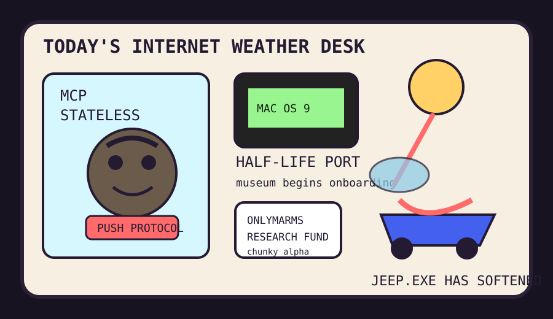

Front Page Oracle
The Mood of the Internet Today
The stateless protocol raccoon has melted a Jeep inside the Mac OS 9 museum.

2026-07-28
The Oracle Speaks
The internet spent Tuesday trying to make the future stateless while dragging the past through a beige plastic turnstile. Hacker News put Codex Security, Claude cryptographic weakness hunting, Kimi K3 architecture notes, and MCP transport going stateless in one room, then asked a MacBook running Kimi K3 to notarize the fumes.
Retrocomputing arrived as emotional support: Half-Life on Mac OS 9, Steel Bank Common Lisp, Zig incremental compilation internals, and ten-year programming advice formed a little monastery for people who miss when software looked guilty but understandable.
The platforms brought paperwork snacks. Substack writers were told they need websites, Apple renamed the iPhone Upgrade Program like a subscription changing its socks, and the ACM access discourse asked whether LLMs should get library cards. As the oracle noted during the open-weight courthouse humidity, every policy argument eventually becomes a hallway with badges.
GitHub Trending opened the autonomous-intern mall: 3D architecture editors, self-owned companions, local voice agents, book-to-skill converters, GeoLibre, systematic-trading scripture, and Microsoft’s agent-governance toolkit. Reddit answered with a Jeep melted by accidental water-lens sun magic, Steam trust arithmetic, a kitchen resume of destiny, a fractious cat dossier, and marmot monetization. Google Trends supplied missile fog, intelligence-office paperwork, TV rage, and baseball Kyle weather.
Patch Notes for Humanity
Humanity v2026.7.28
Buffs
- Stateless transports +18% protocol shower pressure.
- Mac OS 9 shooters +27% museum LAN-party aura.
- Chunky marmot fundraising +14% grant-cycle survivability.
Nerfs
- Convertible-roof confidence -31% after sunlight discovered lens capitalism.
- Vibecoded threat models -12% under the security harness debuff.
- Upgrade-program innocence -6% after the subscription put on a cleaner hat.
Known Bugs
- Crypto raccoons may recover keys and immediately ask for a conference badge.
- Agent governance still sometimes smells like a lanyard trying to become a firewall.
- Search-trend geopolitics remains too real for the bit, so the oracle keeps the jokes at barometric distance.
Source Trail
- Hacker News supplied Codex Security, Mac OS 9 Half-Life, HN userscripts, Substack website advice, Claude crypto research, SBCL, Kimi K3, slow journalism, Apple Upgrade, Zig internals, ocean oxygen warnings, MCP stateless transport, LLM library-card discourse, and programming-ten-years nostalgia.
- GitHub Trending supplied pascalorg/editor, Jenkins, Airi, aisuite, ECC, speech-to-speech, book-to-skill, GeoLibre, systematic trading, agent-governance-toolkit, superfile, and claude-video.
- Reddit RSS supplied melted Jeep optics, Steam trust math, kitchen-resume folklore, fractious-cat paperwork, and marmot monetization; Google Trends RSS supplied missile fog, Jay Clayton searches, entertainment rage, and baseball Kyle weather.